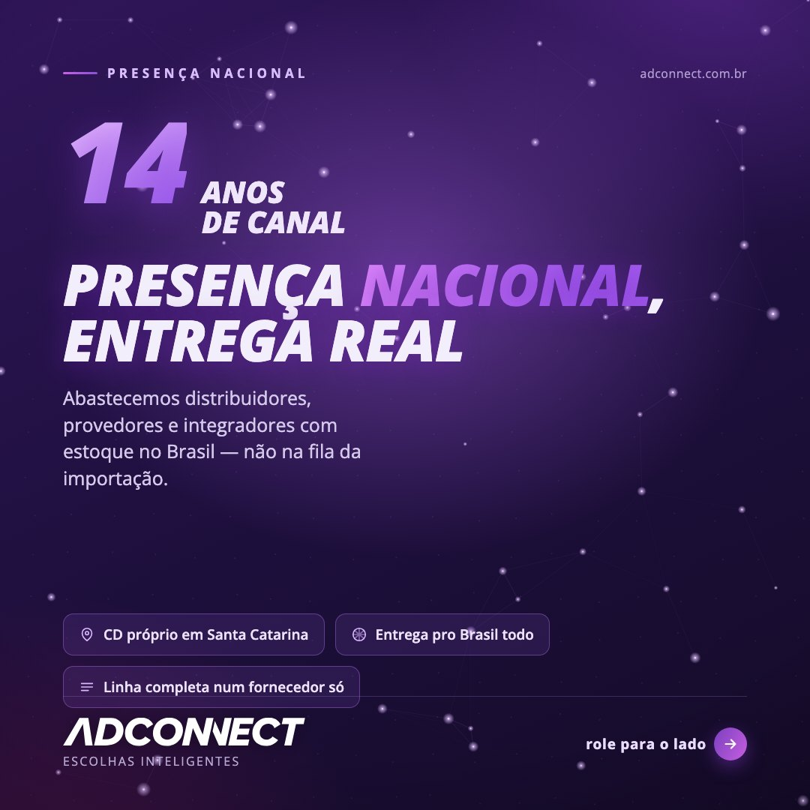
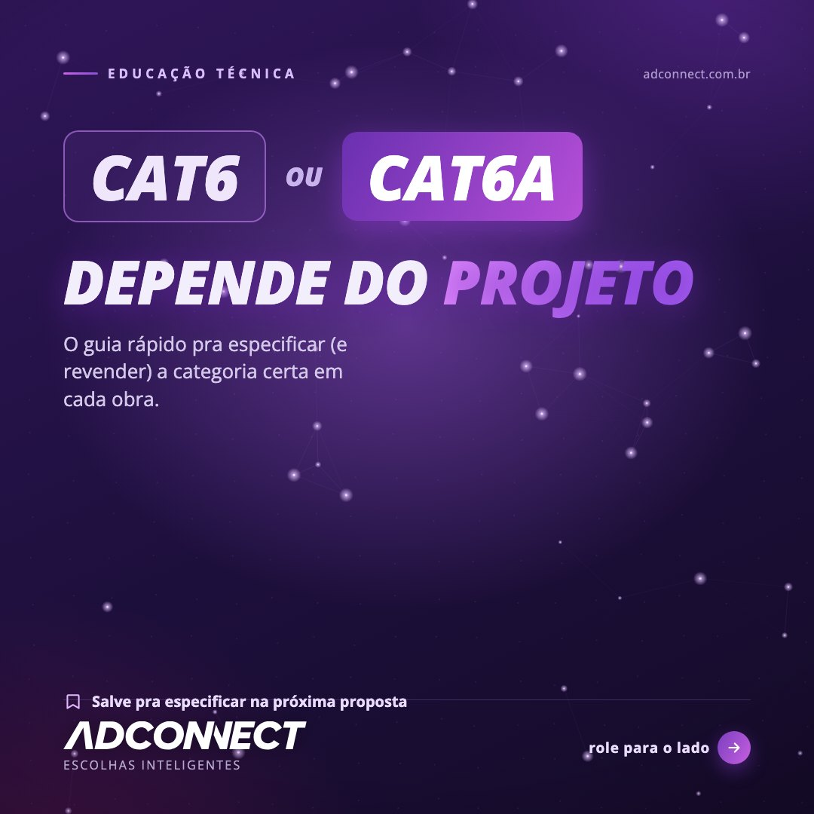
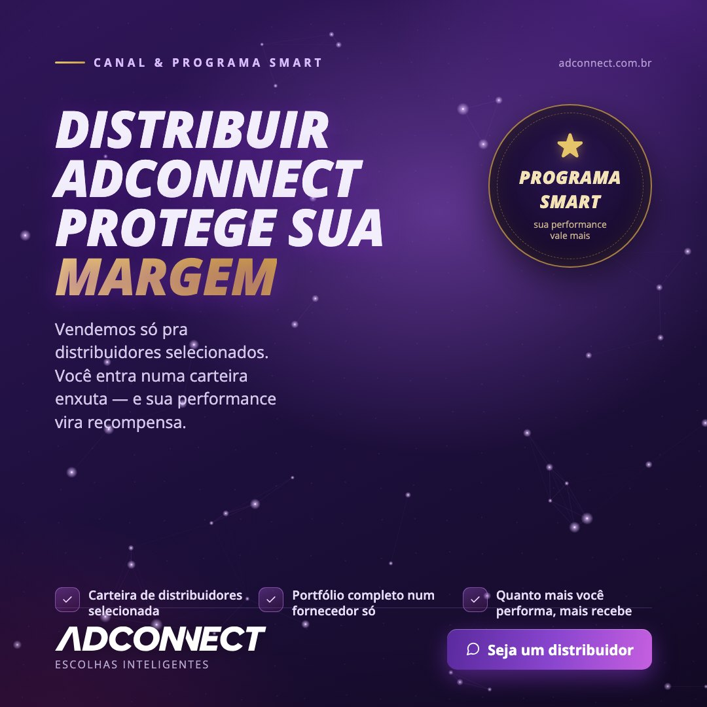
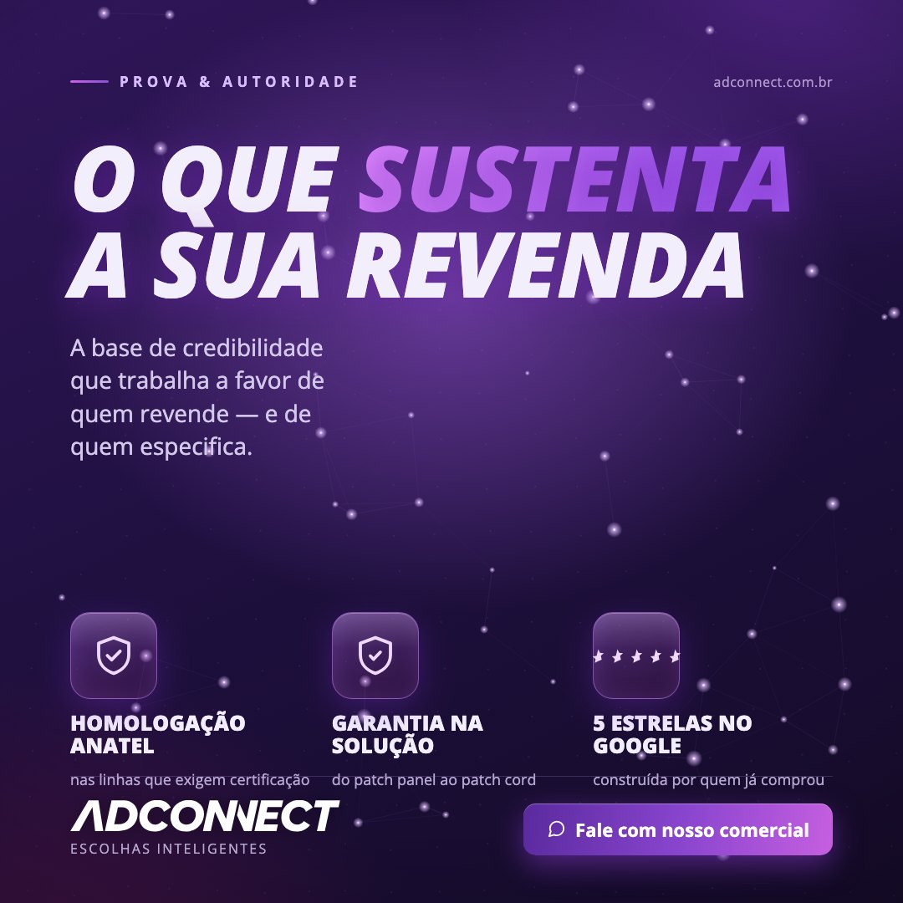
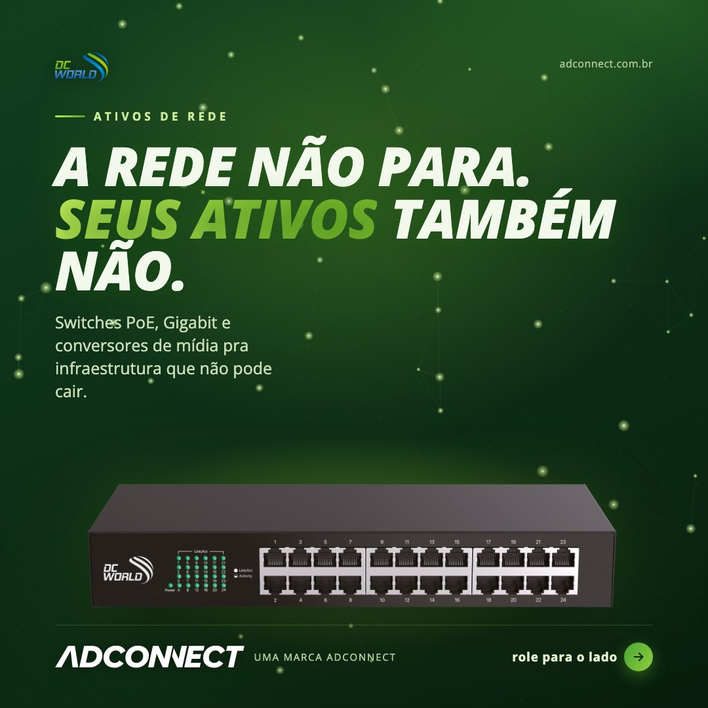
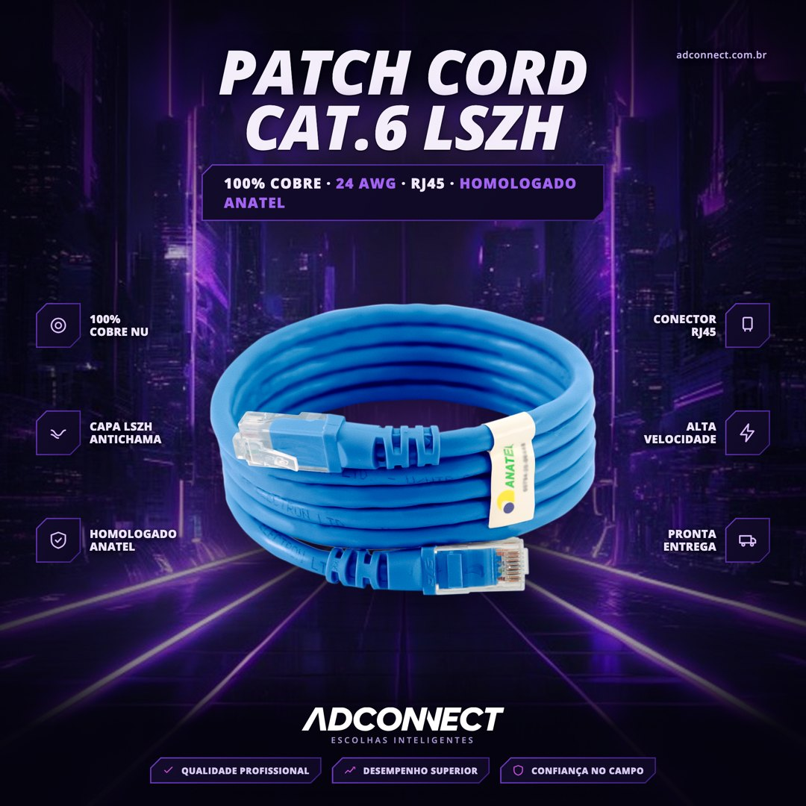
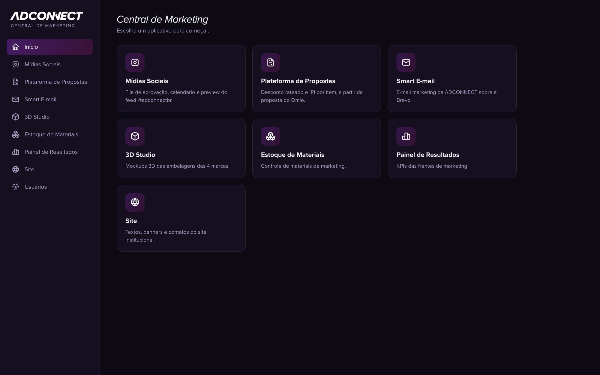
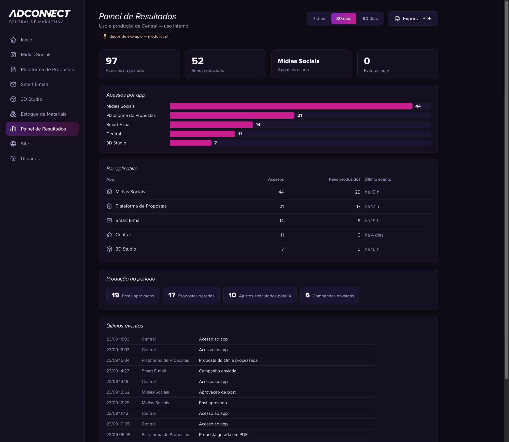
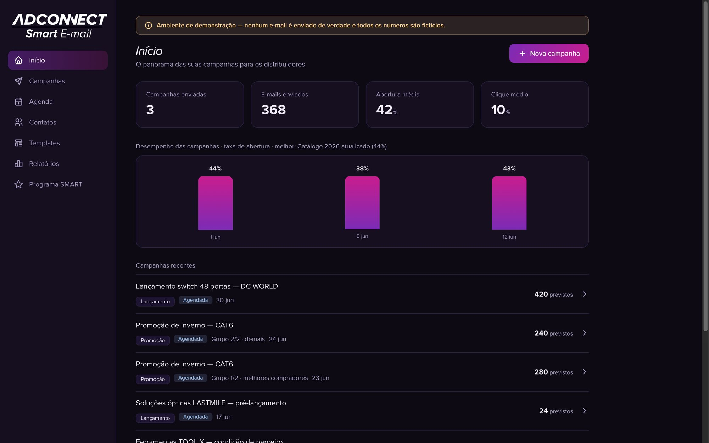
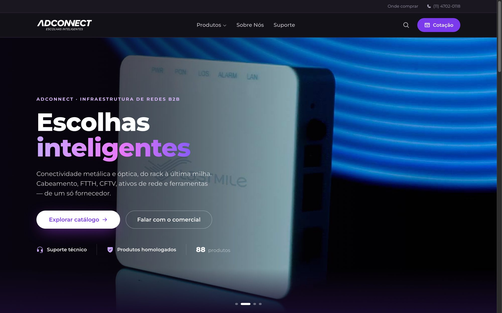

Portfólio · Projetos de Marketing
Mais de 5 anos em marketing e vendas B2B. Na Adconnect, fabricante de conectividade e redes, coordeno lançamentos e campanhas entre Produto, Criativo e Comercial, do briefing à publicação e ao relatório, e lidero a pessoa responsável pelas redes sociais. Abaixo estão projetos e posts reais, feitos por mim.
São Paulo, Brasil Perfil no LinkedIn
Frentes que coordeno na prática: Google AdsMeta AdsLinkedIn AdsSocial mediaDesign e vídeoE-mail e nutrição
Como eu trabalho
Planejo o conteúdo em blocos de duas semanas, com cinco posts por semana, cada um ligado a um pilar. Toda peça passa pela minha aprovação antes de sair, num fluxo que eu mesmo construí.
Posts selecionados
Cada formato tem uma função: gerar confiança, ensinar, recrutar, provar e vender. As legendas explicam a decisão por trás do design e do texto.






Processos e operação
Um login com acesso por perfil a tudo o que o time usa: aprovação de posts, gerador de propostas, e-mail marketing, estúdio 3D de embalagem, estoque de materiais e painel de resultados. Construí com Claude Code. A IA é o que me deixa entregar tudo isso com um time de marketing de duas pessoas, não um substituto para o pensamento de marketing.

Métricas e relatórios
Acessos, produção e ajustes feitos com IA em todas as ferramentas de marketing, com visões de 7, 30 e 90 dias e registro de eventos em tempo real. É com esse tipo de visão que eu identifico o que está abaixo do esperado antes de virar problema.

E-mail e nutrição
Construí sobre a API do Brevo para reunir lançamentos, promoções e e-mails do programa de fidelidade num só lugar: campanhas, calendário de envios, segmentos de contatos, modelos e relatórios.

Site e conversão
Catálogo de 88 produtos com ficha técnica em PDF para cada item e dois caminhos de conversão: pedido de orçamento e WhatsApp direto com o time comercial.
